Malaria and Leishmaniasis
Parasitic Diseases: Malaria and Leishmaniasis
Russell Lewis
Associate Professor, Infectious Diseases
Department of Molecular Medicine
MEP 2491 Infectious Diseases
2 May 2023
Protozoa “first animals”
| Means of spread | Habitat Extracellular |
Intracellular |
|---|---|---|
| Insect-borne* | African trypanosome (blood) | Plasmodium (liver, red blood cells) Leishmania (macrophage) South-America trypanosome (macrophage, muscle, nerve) |
| Water-born | Amoeba (gut) Giardia (gut) Cryptosporidium (gut) Isospora (gut) Trichomonas (urogenital) |
Toxoplasma (macrophage) |
World Malaria Day

The pathogen
Apicomplexa group of protozoa- specialized complex of apical organelles (micronemes, rhoptries, dense granules) involved in host invasion
The vector

Malaria is transmitted by the bite of Plasmodium-infected female mosquitoes of the Anophelus genus
Malaria endemic regions
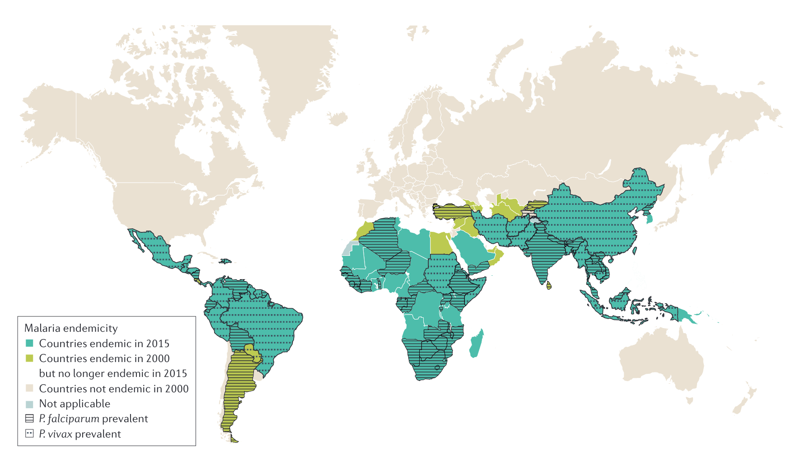
The impact of malaria on humans is
is staggering
Kills roughly 2000 people per day, most of whom are children in Africa
The strongest documented force for evolutionary selection in the recent history of the human genome
- Malaria is the evolutionary driving force behind the most common Mendelian diseases of humankind: sickle-cell disease, thalassemia, glucose-6-phosphatase deficiency, and other erythrocyte defects
Malaria was once prevalent throughout much of the inhabited world, but has been eliminated from the USA and Canada, Europe, and Russia (chloroquine-based treatment, large-scale insecticide using DDT)
- Malaria prevalence resurged in tropical countries from the 1970s to the 1990s because of a combination of relaxation of control efforts, increasing antimalarial drug resistance, and insecticide resistance in the mosquito vectors
- More selective vector control approaches (insecticide bed nets, indoor residual spraying) and the introduction of artemisinin-based regimens have led to an overall reduction in mortality in the last 20 years
Growing resistance to insecticides in mosquitoes (Anopheles gambiae)
Trends in Malaria death rates in 2021
Source: Our World in Data
Malaria deaths by age
Source: Our World in Data
Airport or “suitcase-associated” malaria
Autochthonous transmission
- Airport malaria
- Asymptomatic donors from endemic areas with low-level parasitaemia
- Blood donors
- Solid organ transplant
Cases in Italy
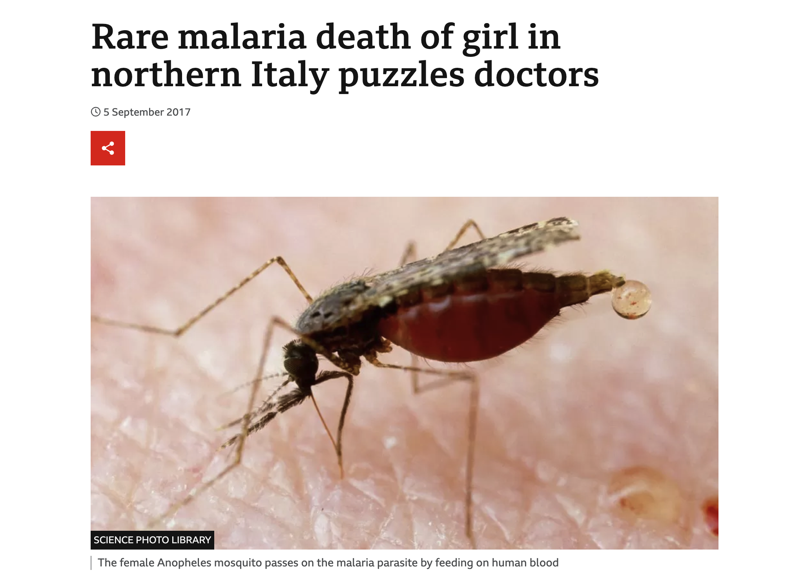“It’s the first time in my 30-year career that I’ve seen a case of malaria originating in Trentino,” said Dr Claudio Paternoster, an infectious diseases specialist at Trento’s Santa Chiara Hospital. Since the 1950s, Italy has not had a malaria problem because mosquito-infested marshes were drained. There is speculation that Sofia might have caught malaria from one of two children treated for it at the Trento hospital after 15 August. They had caught it in Africa, and recovered.
Pathogenesis
Plasmodium spp. life cycle
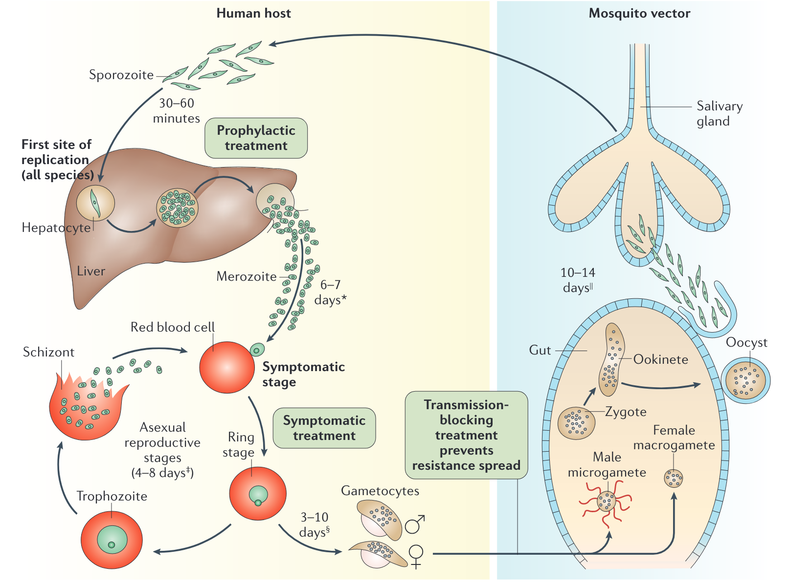
Clinical presentation
- First symptoms are typically experienced 2-4 weeks after mosquito bite
- Asexual replication in RBCs results in subsequent waves of merozoite and malaria endotoxin release (heamozoin and parasite DNA) → TNF-α and paroxysms of chills, fevers and sweats for several hours followed by extreme fatigue
- Cycle repeats every:
- 24 hours Plasmodium knowlesi
- 48 hours Plasmodium falciparam, Plasmodium vivax, Plasmodium ovale
- 72 hours Plasmodium malaria
- Some P. vivax and P. ovale can postpone development in liver as latent forms called hypnozoites (not eradicated by standard therapy e.g., chloroquine) directed against blood stages.
- Hyponozoite development can resume months to years later leading to relapse
- Relapse can be prevented with primaquine, but only moderately effective
Five species of Plasmodium infection in humans
| Plasmodium spp. | Liver stage | Blood cycle and fever peaks | Disease features |
|---|---|---|---|
| P. falciprium | 6-14 days | 48h (tertian) | Major complications, fatal without treatment |
| P. vivax | 12-17 days | 48h (tertian) | Seldom fatal, but can better survive unfavourable temperatures and remain dormant in the liver |
| P. malariae | 13-40 days | 72h (quartan) | Nephrotic syndrome |
| P. ovale | 9-18 days | 48h (tertian) | |
| P. knowlowsi | 9-12 days | 24h (quotidian) | Southeast Asia, monkey |
Plasmodium falciparum
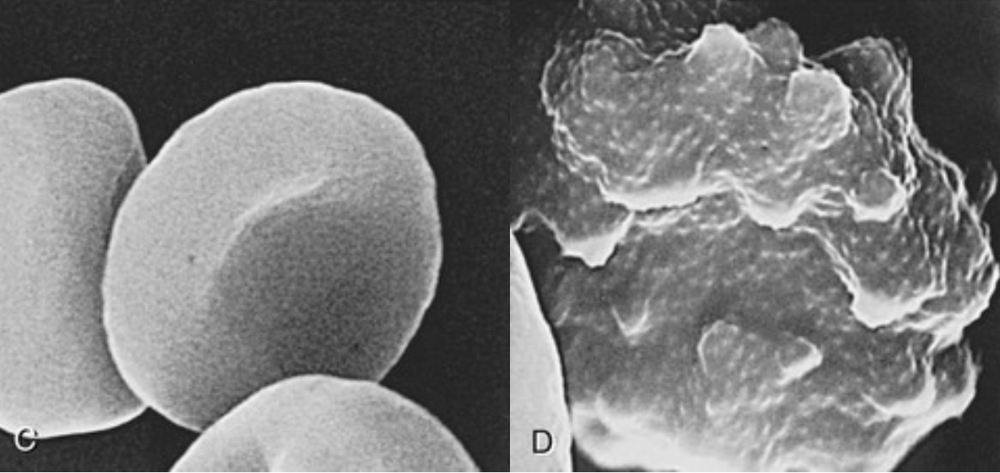
Plasmodium falciparum
Most deadly (1 million deaths per year- anaemia and cerebral malaria)
Sequestration- parasitized RBCs: glomerulonephritis, hypoglycaemia, pulmonary edema
Almost all deaths are caused by this species
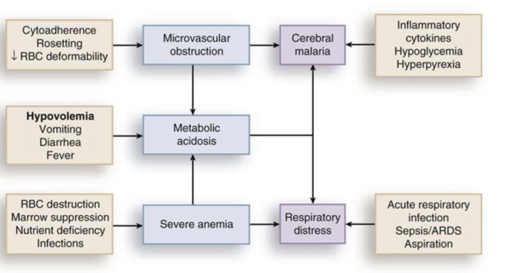
Cerebral malaria
- Cerebral malaria (intense sequestration of infected erythrocytes in cerebral microvessels)
- Ring haemorrhages, perivascular leukocyte infiltrates, thrombin deposition
- Impairment of local delivery of oxygen and glucose
- Often does not produce neurological sequelae akin to thrombotic stroke
- Recovery within 48 hours common
Imaging findings cerebral malaria
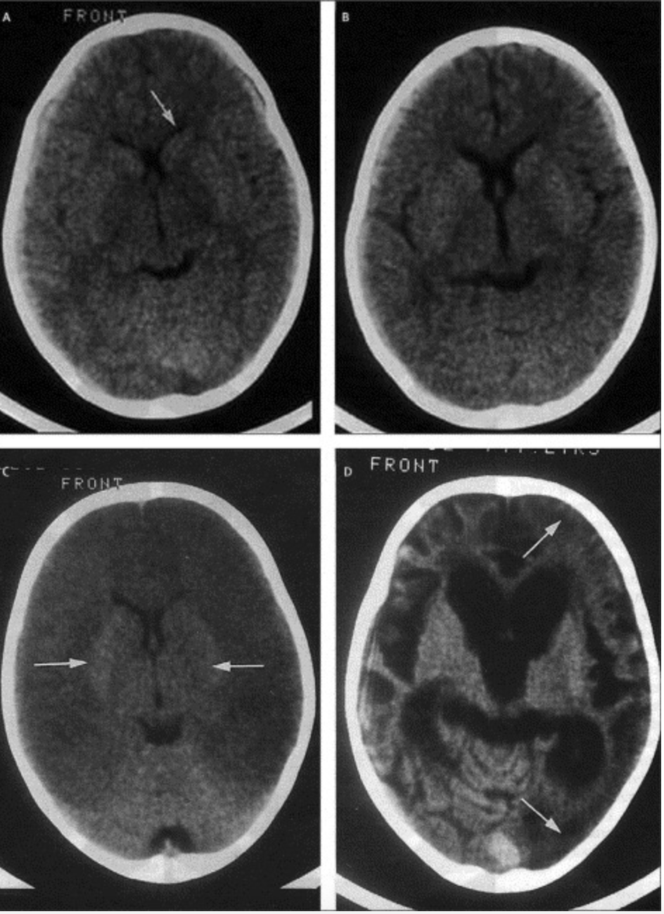
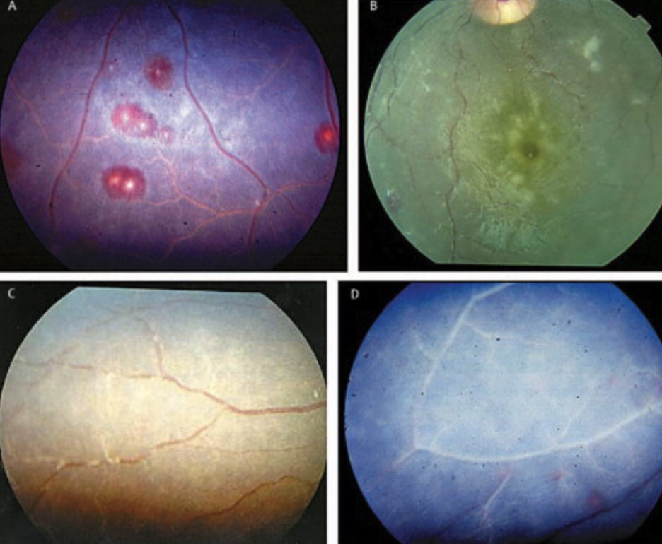
Malaria- acquired immunity
Mediated by IgG antibodies against surface proteins of sporozoite (blocking hepatocyte invasion)
- Antibody-dependent cellular cytotoxicity, opsonisation for uptake, destruction by splenic macrophages, interference with PfEMP-1 mediated cytoadhearence interactions
Immunity not sterilizing, instead “disease-controlling immunity” despite presence of parasites in bloodstream
Immunity increases with age, cumulative episodes and time living in endemic area
Short-lived without continued exposure to different P. falciparum variants
Antigen switching results in new waves of parasitemia, escape from antibody responses
Disease controlling immunity (premunition) after repeated infection episodes associated with development of antibody repertoire that recognizes the full spectrum PfEMP-1 variant antigens
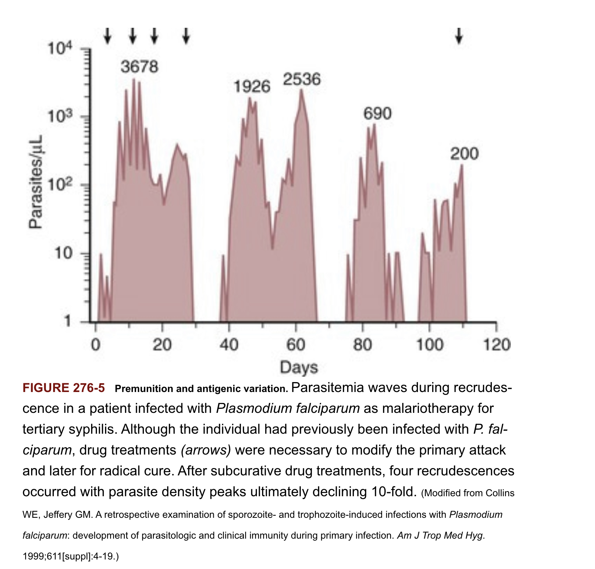
Host traits that influence disease severity
(besides blood disorders)
Splenectomy - high parasite loads
- Splenomegaly common in malaria (removal of infected erythrocytes) but contributes to anaemia associated with disease
Pregnancy - parasites that express protein surface variant antigen 2-CSA (chondroitin sulphate-2) attaching to glycoproteins expressed in the placenta …leading to infected red blood cell sequestration in the placenta
- Increased risk of maternal and/or foetal death, miscarriage, inter-uterine growth retardation, low-birth weight, increased newborn mortality
HIV (higher degree of parasitemia, mortality)
Tuberculosis
Complications of malaria
Hypoglycaemia (coma, convulsions)
Children: Impaired hepatic gluconeogenesis, increased glucose consumption in peripheral tissues and by parasites, normal insulin levels
Adults: Hyperinsulinemia due to parasite stimulation of pancreatic islet cells or quinine/quinidine therapy
Decreased food intake during prodromal period
Anaemia
- Intra vascular lysis and phagocytic removal of infected erythrocytes
- TNF-α associated suppression of erythropoetin
- Normochromic, normocytic anaemia without robust reticulocyte response
Pulmonary oedema and respiratory distress
- Non-cardiogenic pulmonary oedema due to sequestration of infected erythrocytes → inflammatory response → capillary permeability → pulmonary oedema → hypoxia →acute lung injury → ARDS
- Dyspnea and increasing respiratory rate are features of impending pulmonary oedema and preclude other clinical (e.g., accessory muscle breathing) and radiologic signs (increased interstitial markings)
- TNF-α associated suppression of erythropoeitin
- Normochromic, normocytic anemia without robust reticolocyte response
Pulmonary oedema and respiratory distress
- Non-cardiogenic pulmonary oedema due to sequestration of infected erythromyctes → inflammatory response → capillary permeability → pulmonary oedema → hypoxia →acute lung injury → ARDS
- Dyspnea and increasing respiratory rate are features of impending pulmonary oedema and preclude other clinical (e.g., accessory muscle breathing) and radiologic signs (increased interstitial markings)
Metabolic (lactic) acidosis
- Reduced delivery of oxygen to tissues from combined effects of anaemia, sequesterization and hypovolemia
- Shift from aerobic to anaerobic metabolism causes lactate levels to rise
- Lactate clearance by liver reduced
Acute renal failure
- Less common in children
Diagnosis and Screening
Clinical History
Febrile illness (cyclic paroxysms of chills rigours and fever with drenching night sweats after travel to an endemic area)
Fever 100%
Headache 100%
Weakness 94%
Profuse night sweats 91%
Insomnia 61%
Arthralgias 59%
Myalgias 56%
Diarrhoea 13%
Abdominal cramps 8%
Physical exam
- Pallor
- Hepatosplenomegaly
- Jaundice, diminished consciousness, convulsions (severe malaria)
- Less common (rash, lymphadenopathy, pulmonary consolidations)
Parasites can be detected on light microscope examination of blood smear
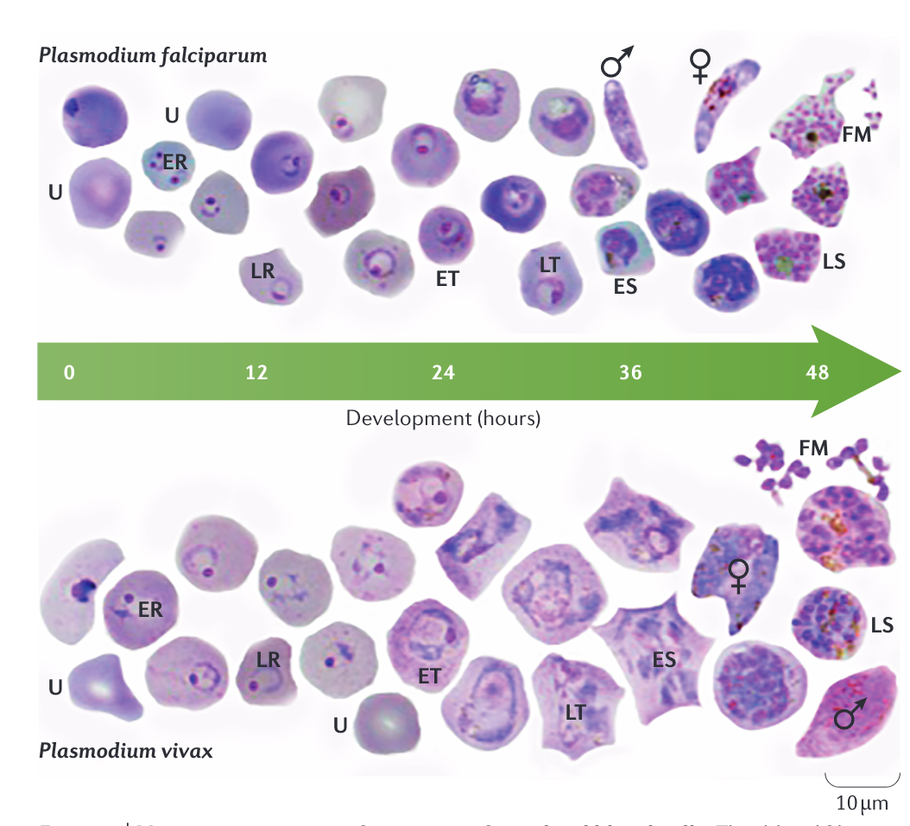
Parasitemia
Light microscopy of Giemsa-stained blood smears is the accepted standard for diagnosis
Thick smears concentrate red cell layers 40-fold and used to screen large amounts of blood for parasites- RBCs lyse so parasites are visualized outside red cells
Parasite density can be calculated by counting the number of parasites per 200 WBCs x 40 = number of parasites per μL blood
For P. falciparum, initial blood smears may be negative because mature erythrocytes (trophozoites and schizonts are sequestered in peripheral tissues)
Smear is repeated every 12 hours until diagnosis is ruled in or ruled out
Thin smears used to determine Plasmodium species
Microscopic images of parasite
infected red blood cells
| Description | Image |
|---|---|
| Multiple signet-ring P. falciparum trophozoites visualized outside erythrocytes in thick blood smear | 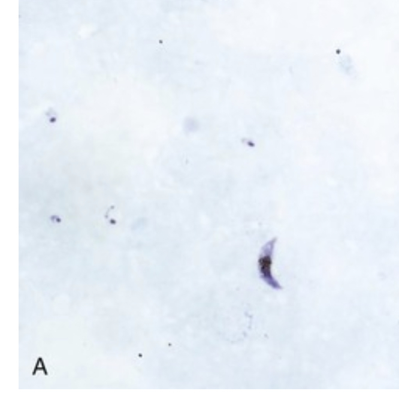 |
| Multiply infected erythrocyte containing containing signet-ring P. falciparum trophozytes | 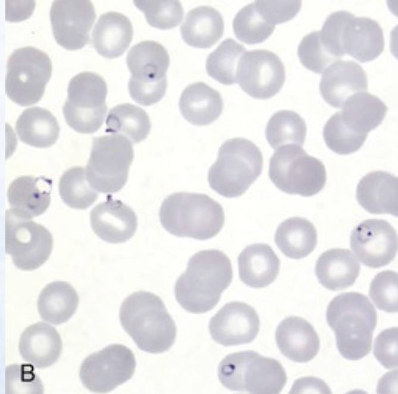 |
| Banana-shaped gametocyte unique to P. falciparum | 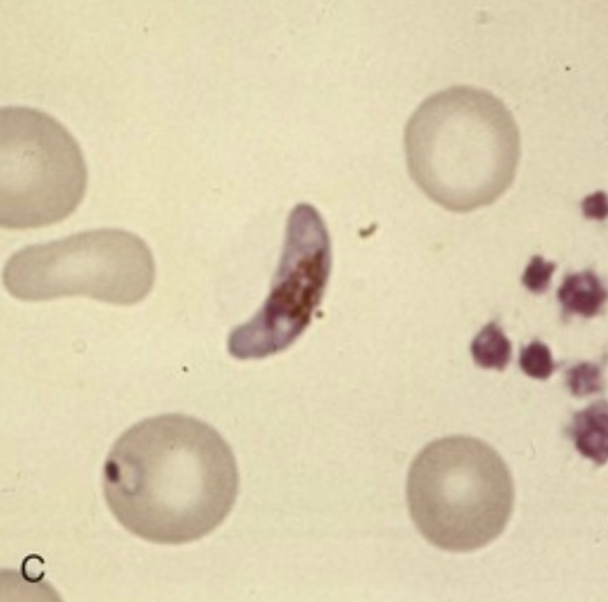 |
| Ameboid trophozoite characteristic of P. vivax | 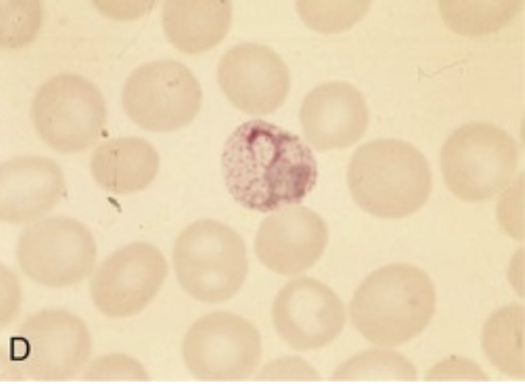 |
| P. vivax schizont | 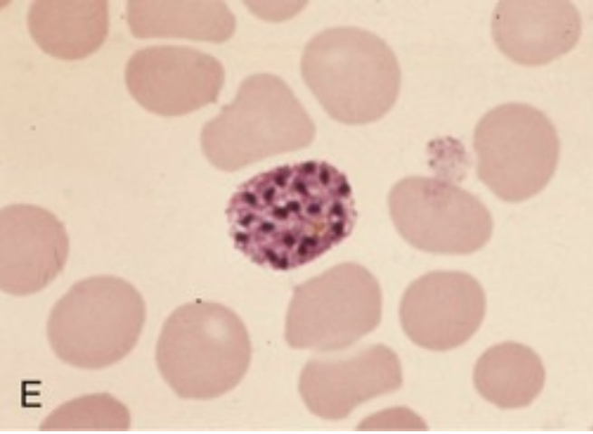 |
| P. vivax spherical gametocyte | 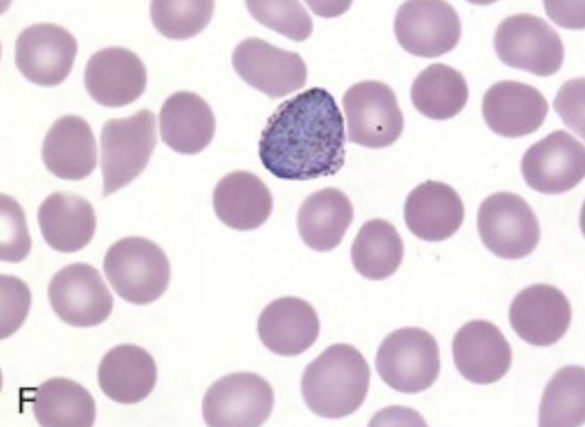 |
| P. ovale trophozoite. Note Shuffner’s dots and ovoid shape of erythrocyte | 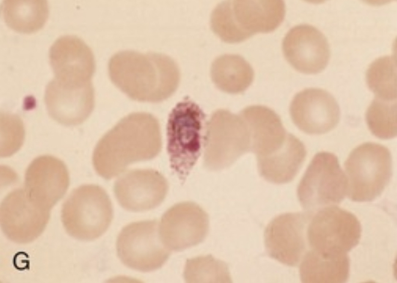 |
| Characteristic band form trophozoite of P. malariae containing intracellular pigment hemozoin | 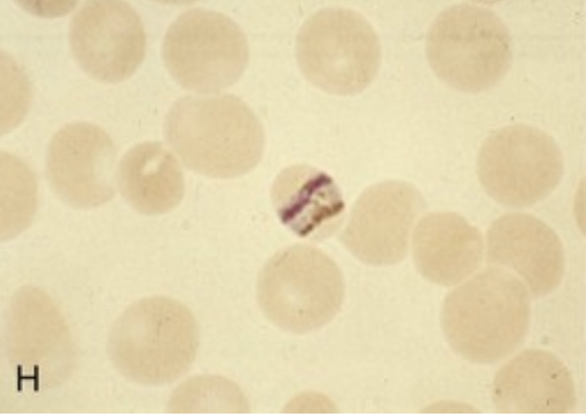 |
Rapid diagnostic tests (RDTs)
Detection of Plasmodium histidine-rich protein-2 (HRP-2)
Limited to P. falciparum
Not useful for monitoring treatment response (positive for 28 days)
Less sensitive at parasite densities of 100-1000/μL (may miss non-immune travellers with symptoms at low parasite densities)
Detection of P. falciparum specific lactate dehydrogenase (LDH) and pan-Plasmodium LDH
Adequate sensitivity for P. vivax, P. ovale, and P. malaria with less sensitivity for P. falciparum
However, positive signal is proportional to P. falciparum parasitaemia, allowing for monitoring of therapeutic response
Combination tests of HRP-2/LDH under development
PCR and quantitative PCR (becoming gold standard)
- Identifies species
- Detets low levels paracetemia
- qPCR can be used to monitor therapy
- Availability in endemic areas?
Diseases with similar clinical presentations
Malaria should always fall near the top of the differential for fever in travellers or immigrants who have been in an endemic area in the previous 3 months (and remain in consideration for years afterword)
Common differential diagnosis:
Influenzae
Enteric fever
Bacteraemia/sepsis
Classic dengue fever (typically more severe myalgias , shorter incubation of 4-7 days, rash and lymphadenopathy)
Acute schistosomiasis (Katayama fever-freshwater exposure) urticaria at site of cercarial penetration (usually legs) and eosinophilia
Leptospirosis (conjunctival suffusion and rash progressing to haemorrhagic manifestations)
African tick fever (lymphadenitis, multiple inoculation eschars)
East African trypanosomiasis (sleeping sickness) -red chancre at bite site, posterior cervical lymphadenopathy, rash)
Yellow fever (conjunctival suffusion, shorter incubation period 3-6 days relative bradycardia). Unlikely in patients who have been vaccinated in last 10 years
Therapy
Definition of severe malaria
| Manifestations | Definitions |
|---|---|
| Impaired consciousness | Glasgow coma score <11 in adults or Blantyre coma score <3 in children; inability to swallow |
| Prostration | Generalized weakness so that a person is unable to sit, stand, or walk without assistance |
| Multiple convulsions | More than two episodes within 24 hours |
| Acidosis | A base deficit of >8 mEq/L, a plasma bicarbonate level of <15 mmol/L, or venous plasma lactate ≥5 mmol/L. Clinical indicators of acidosis include rapid, deep, labored breathing. |
| Hypoglycaemia | Blood or plasma glucose <40 mg/dL (<2.2 mmol/L) for children ≥5 years and adults; blood or plasma glucose <54 mg/dL (<3 mmol/L) for children <5 years |
| Severe anaemia | Haemoglobin concentration ≤5 g/dL or hematocrit ≤15% in children <12 years of age (<7 g/dL and <20%, respectively, in adults) with parasite count >10,000 parasites/uL |
| Renal impairment | Plasma or serum creatinine >3 mg/dL (265 umol/L) or blood urea >20 mmol/L |
| Jaundice | Plasma or serum bilirubin >50 umol/L (3 mg/dL) with one of the following: - Plasmodium falciparum parasite count >2.5% parasitemia - Plasmodium knowlesi parasite count >20,000 parasites/uL |
| Pulmonary edaema | Radiographically confirmed or oxygen saturation <92% on room air with respiratory rate >30/minute, often with chest indrawing and crepitation on auscultation |
| Significant bleeding | Including recurrent or prolonged bleeding (from the nose, gums, or venipuncture sites), hematemesis, or melena |
| Shock | Compensated shock is defined as capillary refill ≥3 seconds or temperature gradient on leg (mid to proximal limb), but no hypotension. Decompensated shock is defined as systolic blood pressure <70 mmHg in children or <80 mmHg in adults, with evidence of impaired perfusion (cool peripheries or prolonged capillary refill). |
| Hyperparasitaemia | P. falciparum: - In non-immune travelers: parasitemia ≥5%[3] - All patients: parasitemia >10% P. knowlesi: - Parasite density >100,000 parasites/uL Plasmodium vivax: - No established parasite density thresholds |
Therapy- General principles
P. falciparum malaria can be fatal if not diagnosed and treated promptly an appropriately
- Especially true for non-immune travellers returning from visits to malaria-endemic areas
Malaria is a disease of protean manifestations, diagnosis is delayed by non-specific clinical presentation and unimpressive normal laboratory tests- especially if blood smears (and available rapid diagnostic tests) are not examined
Life-threatening manifestation (i.e. convulsions, hypoglycaemia, pulmonary oedema) can develop rapidly in patients who appear well at presentation or respond to antimalarial drugs
Pregnant women, young children and elderly are at increased risk and should be hospitalized regardless
If patient develops malaria despite prophylaxis, they should receive a different antimalarial regimen for treatment
Drug treatment versus parasitic life cycle
Artemisinin parasite clearance
Artemisinin-based combination therapy (ACT)
Low side effect profile
Potent against all states (asexual forms) of malaria
Most rapid clearance time relative to other antimalarial drugs
Administered in combination with second drug that has longer half life to forestall artemisinin resistance
WHO recommendations:
Uncomplicated malaria treatment

Duration of treatment
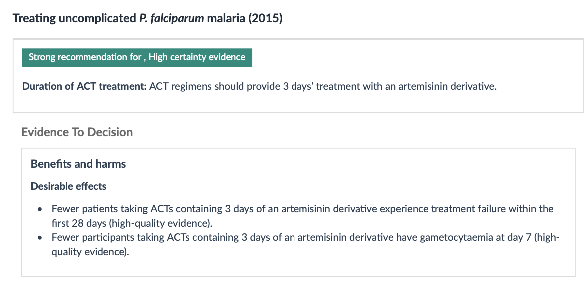
Treatment of pregnant patients
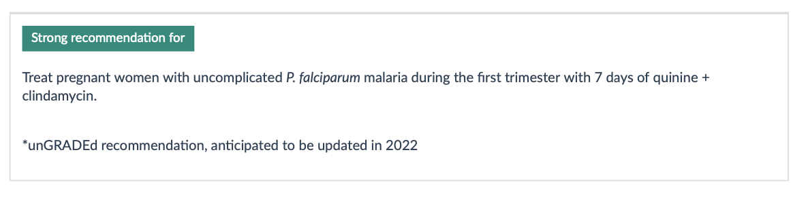
Relapse or Recurrence
Follow-up blood smears should document clearance of parasitemia within 48-72 hours of appropriate therapy. Follow-up smears every 12-24 hours are common.
Recurrence of P. falciparum malaria can result from re-infection or recrudescence (treatment failure)
Failure :< 28 days: Persistent fever, parasitemia → treat with another ACT regimen effective in region. Treatment with same ACT considered if no second line regimens are available
Failure > 28 days: Likely re-infection: Treat with first-line ACT
Treatment failure may result from:
Drug resistance
Inadequate exposure to the drug due to sub-optimal dosing, poor adherence, vomiting, unusual pharmacokinetics in an individual,
Substandard (counterfeited) medicine
Artemisinin resistance
Southeast Asia, parts of sub-Saharan Africa, South America
Consider in patients with epidemiological exposure
Evaluation:
- Malarial blood smear on day 3: Unlikely if parasite density < 3% with initial parasite density of > 100,000 parasites/μL
Reducing transmissibility
Reducing transmissibility
- Gametocytes may persist in blood after successful treatment of infection; not harmful to patient but serve as a source of ongoing transmission
- Single doses of primaquine > 0.4 mg/kg bw reduced gametocyte carriage at day 8 by around two thirds (moderate- quality evidence).
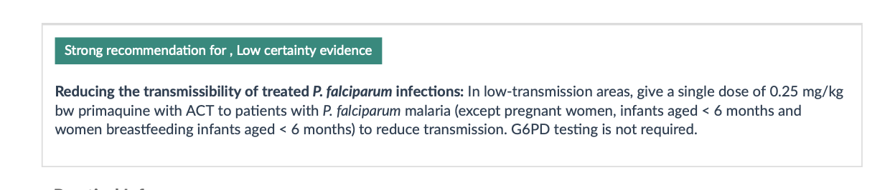
Avoid in pregnant patients and infants < 6 months
Definition of severe malaria
| Manifestations | Definitions |
|---|---|
| Impaired consciousness | Glasgow coma score <11 in adults or Blantyre coma score <3 in children; inability to swallow |
| Prostration | Generalized weakness so that a person is unable to sit, stand, or walk without assistance |
| Multiple convulsions | More than two episodes within 24 hours |
| Acidosis | A base deficit of >8 mEq/L, a plasma bicarbonate level of <15 mmol/L, or venous plasma lactate ≥5 mmol/L. Clinical indicators of acidosis include rapid, deep, labored breathing. |
| Hypoglycaemia | Blood or plasma glucose <40 mg/dL (<2.2 mmol/L) for children ≥5 years and adults; blood or plasma glucose <54 mg/dL (<3 mmol/L) for children <5 years |
| Severe anaemia | Haemoglobin concentration ≤5 g/dL or hematocrit ≤15% in children <12 years of age (<7 g/dL and <20%, respectively, in adults) with parasite count >10,000 parasites/uL |
| Renal impairment | Plasma or serum creatinine >3 mg/dL (265 umol/L) or blood urea >20 mmol/L |
| Jaundice | Plasma or serum bilirubin >50 umol/L (3 mg/dL) with one of the following: - Plasmodium falciparum parasite count >2.5% parasitemia - Plasmodium knowlesi parasite count >20,000 parasites/uL |
| Pulmonary edaema | Radiographically confirmed or oxygen saturation <92% on room air with respiratory rate >30/minute, often with chest indrawing and crepitation on auscultation |
| Significant bleeding | Including recurrent or prolonged bleeding (from the nose, gums, or venipuncture sites), hematemesis, or melena |
| Shock | Compensated shock is defined as capillary refill ≥3 seconds or temperature gradient on leg (mid to proximal limb), but no hypotension. Decompensated shock is defined as systolic blood pressure <70 mmHg in children or <80 mmHg in adults, with evidence of impaired perfusion (cool peripheries or prolonged capillary refill). |
| Hyperparasitaemia | P. falciparum: - In non-immune travelers: parasitemia ≥5%[3] - All patients: parasitemia >10% P. knowlesi: - Parasite density >100,000 parasites/uL Plasmodium vivax: - No established parasite density thresholds |
Treatment of severe malaria
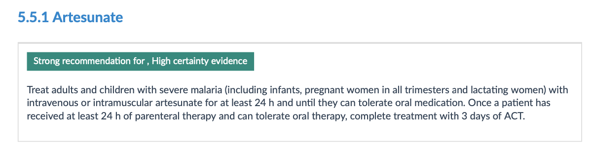
Delayed haemolysis starting >1 week after artesunate treatment of severe malaria has been reported in hyperparasitaemic non-immune travellers.
When artesunate not available, artemether is considered as second line therapy followed by quinine (dihyrdochloride)- must be given by slow infusion or IM.
Pre-referral treatment options
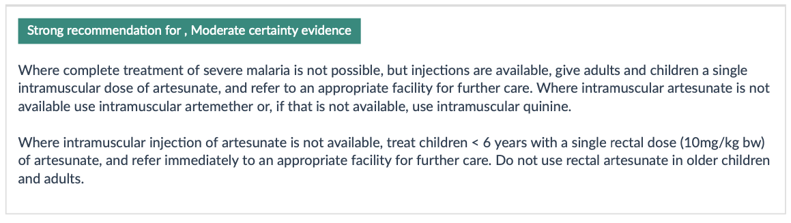
Prevention of malaria infection in travellers
Areas chloroquine-resistant P. falciparum
Mosquito avoidance
Chemoprophylaxis (atovaquone-proguanil, mefloquine, doxycycline, tafenoquine)
Fewest side effects with atovaquone-proguanil
Weekly mefloquine
Doxycycline must be taken daily, sun sensitization
Test for G6PD deficiency before using tefenoquine
Start chemoprophylaxis prior to departure, continued regularly during travel, and continued for a time period after departure (duration is drug dependent)
- Shortest discontinuation time is with atovaquone-proguanil and tafenoquine (one week)
Other options are available for areas with chloroquine-sensitive P. falciparum or P. vivax
Vector control

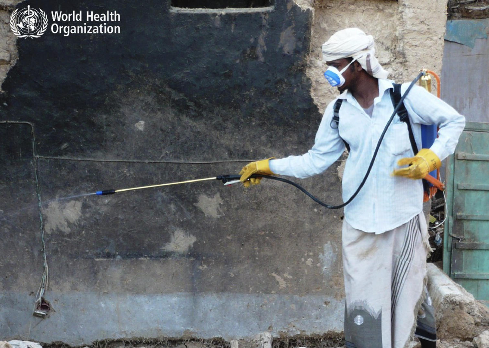
Chemoprevention
Seasonal malaria chemoprevention campaigns targeting children < 5 years
e.g., monthly treatment with sulfadoxine-pyrimethamine treatment during rainy season, > 80% reduction in malaria cases, with > 50% reduction in mortality
Rebound effect? Child looses immunity, treatment stopped because of age limit, social instability, resistance
Vaccine prospects
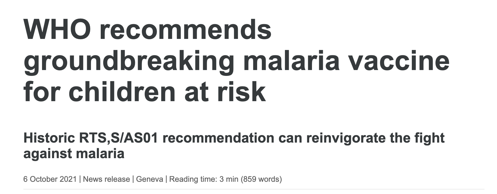Leishmania infections
Tissue smear from patient with Leishmania
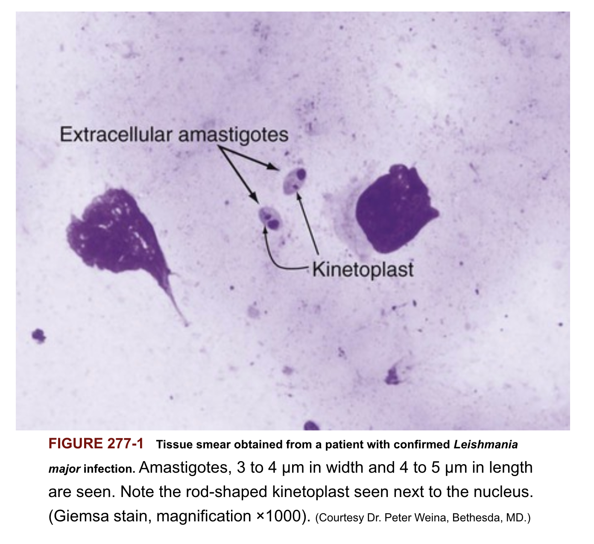Leishmaniasis classification
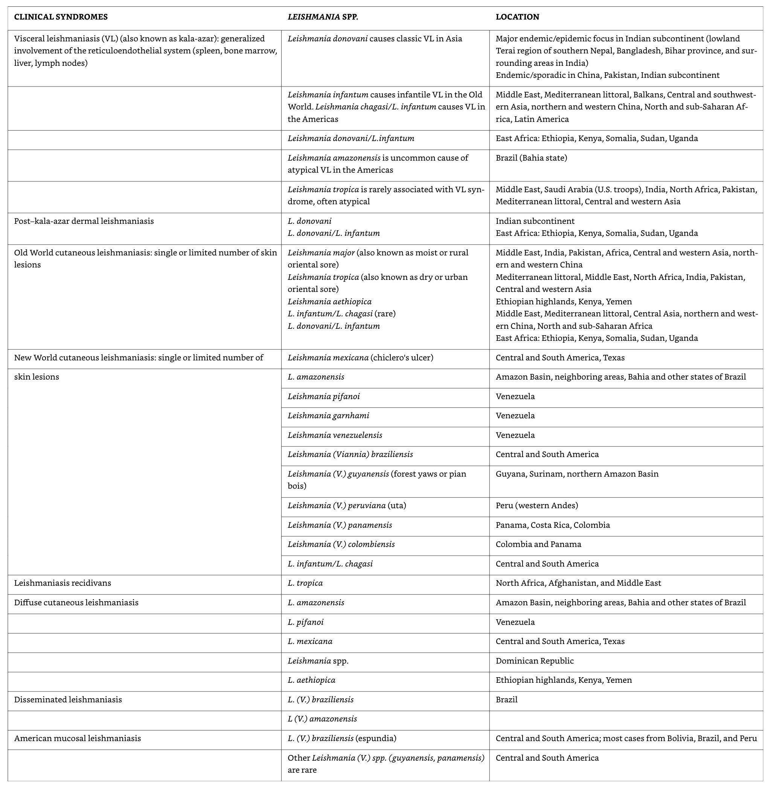Distribution of cutaneous leishmaniasis
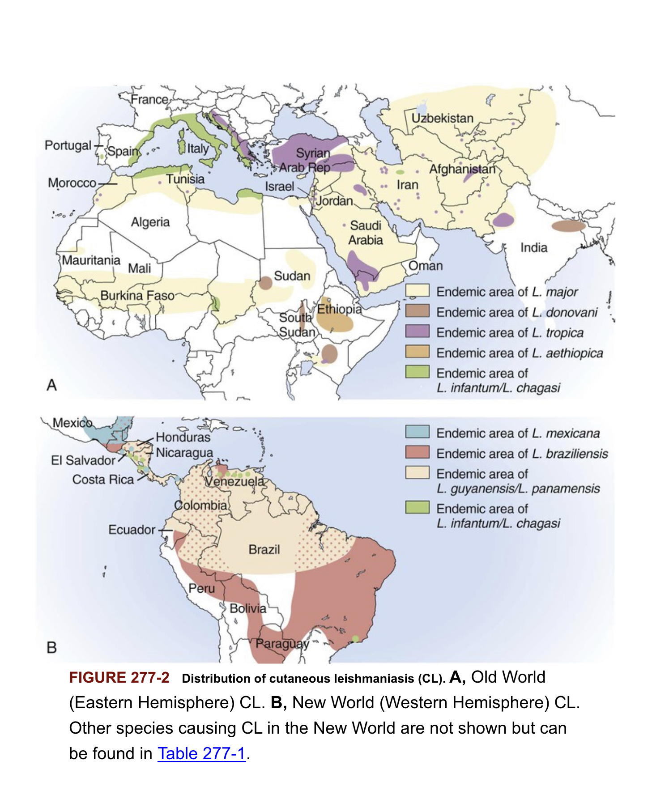Distribution of visceral leishmaniasis
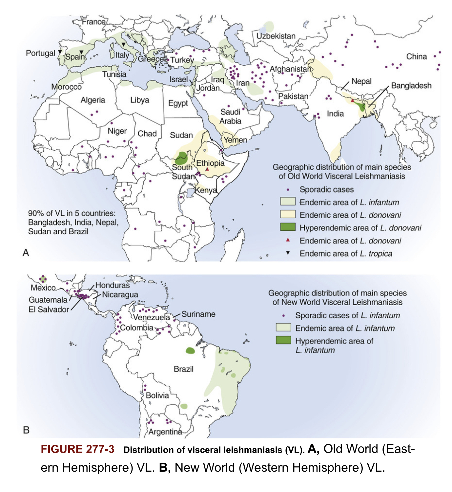Spectrum of Leishmania infection and disease
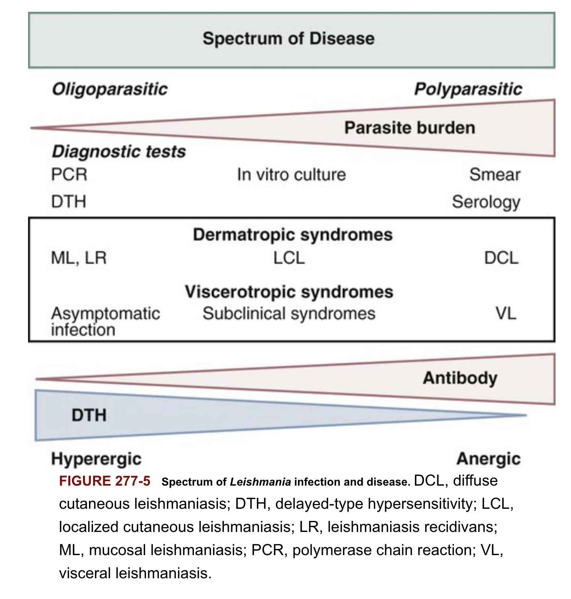Pathophysiology
Leishmania invade and replciate inside host macrophages
Many infections are asymptomatic (subclinical), reflecting the host ability to control the infection
Subclinical infections can reactive during periods of immunosuppression
Classic presentation of VL (kala-azar)
- Prolonged fever
- Weight loss
- Hepato- splenomegaly
- Parasite replicate in reticuloendothelial system (RES), with high parasite loads accumulating in liver, spleen and bone marrow
- Pancytopenia (due to bone marrow suppression)
- Hypergammaglobinumia (polyclonal B cell activation)
- Late in course of infection thrombocytopenia and liver dysfunction
- Uniformly lethal without treatment
Clinical manifestations
- incubation period (2-8 months) but can be as short as 8 10 days
- Clinical disease may first become symptomatic years after exposure in patients who are immunocompromised
- Insidious development: fever, weakness, loss of appetite, weightloss, failure to thrive, abdominal enlargement caused by hepatosplenomegaly
- Acute presentation in non-immune patients with high fever and chills, sometimes with a periodicity suggestive of malaria
- Spleen can become massively enlarges, soft and non-tender -Elevated liver enzymes and bilirubin occasionally present
- Patients often become cachectic with petechia and ecchymoses with possible epistaxis and gingival bleeding
Protruding abdomen with hepatosplenomegaly
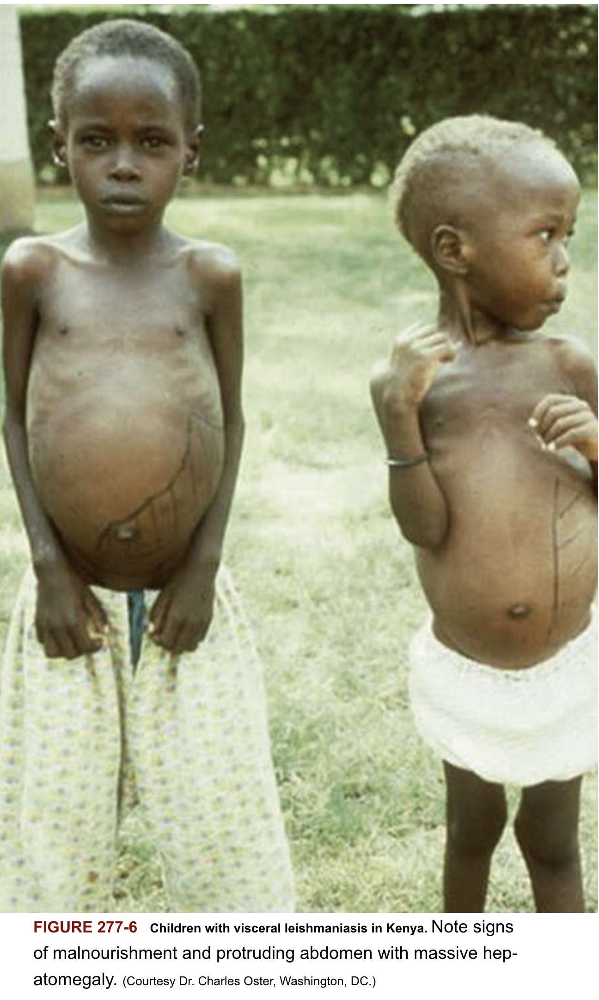Diagnosis Pentad
- Prolonged fever
- Progressive weight-loss
- Pronounced spelnomegaly
- Pancytopenia
- Hypergammaglobulinemia
Diagnosis confirmation
- Parasitologic diagnosis: Amastigotes in tissues
- Isolation of promastigotes in cultures
- Splenic aspiration, liver biopsy, lymph node or bone marrow aspirates (safer but lower sensitivity)
- PCR assay
- Antileishmanial antibodies
Treatment
- Liposomal amphotericin B 10 mg/kg two consecutive days or 3 mg/kg days 1-5, 14, and 21
- Amphotericin B deoxycholate 1 mg/kg for 15 days or 1 mg/kg every other day for 30 days
- Pentamidine (hypotension, hypoglycaemia, insulin-dependent diabetes mellitus)
- Miltefosine (oral, GI toxicity, elevated liver transaminases)
Treatment response
- Fever resolution (1-2 weeks)
- Decrease in spleen size over 1 month
- Weight gain
- Patients need to be followed for 12 month and instructed to return if symptoms recur.